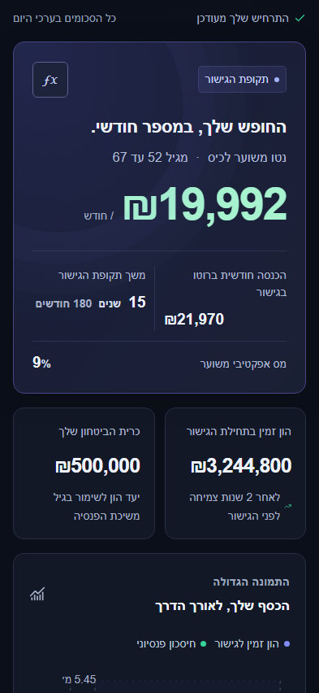

תרחיש בשליטה שלך
משנים. ואז מחשבים.
מעדכנים את השדות ורואים תצוגה מקדימה של ההפרש. התוצאות והגרף מתעדכנים רק בלחיצה על ״חשב סימולציה״, כך שקל להבחין בין טיוטה לתוצאה.
סימולטור ישראלי לפרישה מוקדמת
איך עשויה להיראות התקופה שבין העבודה לפנסיה? בונים תרחיש, משנים הנחות ורואים את ההשפעה המשוערת — בלי הרשמה ובלי להזין נתונים לשרת.
כלי ללמידה ולהמחשה בלבד. לא ייעוץ פיננסי ולא הבטחה לתוצאה.
להבין, לא לנחש
לא תחזית של העתיד, אלא דרך לחקור איך הנחות שונות משפיעות על אותו תרחיש.
מעדכנים את השדות ורואים תצוגה מקדימה של ההפרש. התוצאות והגרף מתעדכנים רק בלחיצה על ״חשב סימולציה״, כך שקל להבחין בין טיוטה לתוצאה.
רואים את ההון הזמין ואת החיסכון הפנסיוני לאורך התקופה, לצד משיכה חודשית משוערת בגישור והערכת הקצבה לפי הנחות המודל.
פותחים את הסבר הנוסחה ובודקים את הנחות המודל בקוד ובתיעוד. שיעורי ההפחתה ומקדמי ההמרה הם הנחות להמחשה, לא חישוב מס או זכאות אישי.
גם במסך הקטן
הממשק מותאם לעברית, לטלפון ולמחשב. שדות מספריים, מחוונים וכפתורי שינוי מאפשרים לבחון הנחות בלי גיליון אלקטרוני.
אין חשבון ואין שמירה אוטומטית. רענון העמוד מאפס את התרחיש ומחייב אישור מחודש של ההבהרה.

פחות מידע בחוץ
היישום אינו שולח את הנתונים שהוזנו או את תוצאות החישוב לשרת. אין ניתוח שימוש, עוגיות, אחסון בדפדפן, גופנים חיצוניים או סקריפטים של צד שלישי.
גם עמוד ההיכרות הזה סטטי: הצילומים מוגשים מאותו אתר, והתנועה נעשית בעיצוב בלבד — בלי נגן חיצוני ובלי מעקב.
הסימולטור מוגש באמצעות Microsoft Azure Static Web Apps, ועמוד זה באמצעות GitHub Pages. תקופות שמירת המטא־נתונים, הרשאות הגישה, מיקומי העיבוד וחלוקת האחריות טרם אומתו במלואם. פרטי הספקים והבירורים מופיעים ב־עמוד הפרטיות המלא.
לא. טעינת העמוד וקובצי האתר מחייבת בקשות רשת. ספקי האינטרנט, האחסון וההפצה עשויים לתעד מידע כמו כתובות רשת וזמני גישה, בהתאם למדיניותם ולדין. אין התחייבות להיעדר תיעוד בתשתיות.
זהו מודל לימודי מפושט עם תשואה קבועה והנחות מס ופנסיה להמחשה. הוא אינו משקף במלואם תנודתיות, סיכון רצף תשואות או שינויי דין. התוצאות בפועל עשויות להיות שונות מהותית, לרבות הפסד הון.
כן. הקוד פתוח ברישיון MIT, עם בדיקות לחישובים ולממשק. אפשר לעיין בקוד ולהציע שיפורים דרך GitHub. אין לכלול מידע פיננסי אישי בפניות או בצילומי מסך.
עדכון אחרון: 28 באוקטובר 2026. עמוד זה כולל ניווט במקלדת, דילוג לתוכן, כותרות מסודרות, טקסט חלופי לצילומי מסך ותמיכה בתנועה מופחתת. קיימות בדיקות אוטומטיות בכרומיום במחשב ובתצוגת טלפון, אך לא הושלמה בדיקה ידנית מקיפה עם קוראי מסך ודפדפנים אחרים. אין כאן אישור לעמידה מלאה בתקן או טענה לפטור מחובות נגישות.
לפניות נגישות, פרטיות ותנאי שימוש לשירות Retirator: retiratorcom@gmail.com. אפשר לתאר את העמוד והפעולה שבה נתקלת בקושי ולבקש חלופה נגישה, ללא חשבון גיטהאב. אין לשלוח נתונים פיננסיים, מסמכי זיהוי או צילומי מסך עם מידע אישי. זהו ערוץ פנייה לשירות, לא זיהוי משפטי של אדם או תאגיד.
פנייה בדוא״ל נשלחת רק ביוזמתך, מחוץ לאתר, ומתקבלת בתיבת ג׳ימייל. תוכן הפנייה, כתובת השולח ופרטי ההודעה מעובדים לצורך הטיפול באמצעות ספקי הדואר; תקופות השמירה והסדרי הטיפול טרם אומתו במלואם. תחולת חובות הנגישות והצורך ברכז טרם הוכרעו בבדיקה מקצועית. לא נטען כאן לפטור או למינוי רכז.
להצהרה המלאה ולפרטי ההתאמות בסימולטור. לפרטי הפרטיות והפנייה בנוגע למידע אישי.
אפשר להתחיל בנתוני הדוגמה ולבחון מה משתנה. הסימולטור נועד ללמידה ולהמחשה בלבד. המחבר אינו יועץ פיננסי; הכלי אינו תחליף לייעוץ פיננסי, פנסיוני, מיסויי או משפטי אישי מאיש מקצוע מוסמך. כל המספרים הם אומדנים, לא הבטחות. לפני החלטה יש לבדוק את הנתונים והדין ולקבל ייעוץ מתאים.